01 / OVERVIEW派系概览
魔法、变化与阴谋。 推荐首发领主：卡伊罗斯。诡计与命运之书：积累诡计值，发动全局阴谋；魔法与远程爆发高。
混沌 · 魔法 / 远程
诡计与命运之书：积累诡计值，发动全局阴谋；魔法与远程爆发高。
为什么玩它
魔法与远程爆发高，玩法花。
要注意什么
前排脆，魔法依赖操作。
蓝色 / 粉色恐怖远程输出，卡伊罗斯放法术；用诡计值换战略优势。
本页数值为 Patch 9.0.4 / Ultra 规模 / 0 级，不含科技、技能、装备、领主光环与战场增益。维护费是战役基础值，受难度、补给线与派系减免影响。中文兵种名为社区习惯译名，以游戏内简中为准。
02 / RECOMMENDED推荐兵种
每个派系挑 6 个最值得先练、先招、先知道的名字。不是“唯一答案”，但能覆盖扛线、输出、机动和攻城。

便宜。

高输出。

高破甲。

飞行。

高机动。

法术。
03 / ROSTER完整兵种表
按类别展开。T 是招募等级；兵模是单位里的模型数；远程 / 射程一栏，前者是每 10 秒全队伤害，后者是射程。名将团单独列在最后。
← 左右滑动查看完整数值 →
领主与传奇领主12 个单位
| 兵种 | T | 兵模 | 生命 | 护甲 | 领导 | 速度 | 近攻 | 近防 | 武器 | 远程 / 射程 | 维护 |
|---|---|---|---|---|---|---|---|---|---|---|---|
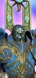 Chaos Lord of TzeentchLord |
— | 1 | 4,640 | 100 | 75 | 33 | 50 | 60 | 490 | — | 250 |
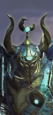 Chaos Sorcerer Lord of Tzeentch (Metal)Wizard Lord |
— | 1 | 3,808 | 80 | 70 | 33 | 48 | 44 | 360 | — | 250 |
Chaos Sorcerer Lord of Tzeentch (Tzeentch)Wizard Lord |
— | 1 | 3,808 | 80 | 70 | 33 | 48 | 44 | 360 | — | 250 |
 Daemon Prince of TzeentchWizard Lord |
— | 1 | 7,600 | 30 | 80 | 80 | 55 | 55 | 450 | — | 475 |
 Exalted Lord of Change (Metal)Wizard Lord |
— | 1 | 7,828 | 30 | 80 | 90 | 50 | 50 | 450 | — | 500 |
 Exalted Lord of Change (Tzeentch)Wizard Lord |
— | 1 | 7,828 | 30 | 80 | 90 | 50 | 50 | 450 | — | 500 |
 Herald of Tzeentch (Metal)Wizard Lord |
— | 1 | 3,808 | 35 | 70 | 38 | 35 | 35 | 375 | 375 / 130m | 250 |
 Herald of Tzeentch (Tzeentch)Wizard Lord |
— | 1 | 3,808 | 35 | 70 | 38 | 35 | 35 | 375 | 375 / 130m | 250 |
Kairos FateweaverWizard Lord |
— | 1 | 8,048 | 50 | 85 | 90 | 35 | 20 | 420 | — | 100 |
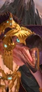 Sarthorael the EverwatcherWizard Lord |
— | 1 | 8,048 | 40 | 85 | 90 | 56 | 56 | 470 | — | 100 |
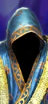 The ChangelingWizard Lord |
— | 1 | 4,321 | 25 | 75 | 50 | 30 | 50 | 375 | — | 250 |
Vilitch the CurselingWizard Lord |
— | 1 | 5,000 | 80 | 70 | 35 | 55 | 55 | 470 | — | 250 |
英雄8 个单位
| 兵种 | T | 兵模 | 生命 | 护甲 | 领导 | 速度 | 近攻 | 近防 | 武器 | 远程 / 射程 | 维护 |
|---|---|---|---|---|---|---|---|---|---|---|---|
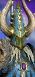 Aekold HelbrassMelee Specialist |
— | 1 | 5,808 | 120 | 80 | 35 | 60 | 40 | 470 | — | — |
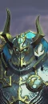 Chaos Sorcerer of Tzeentch (Metal)Wizard |
— | 1 | 3,520 | 80 | 60 | 33 | 42 | 40 | 315 | — | 250 |
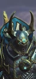 Chaos Sorcerer of Tzeentch (Tzeentch)Wizard |
— | 1 | 3,520 | 80 | 60 | 33 | 42 | 40 | 315 | — | 250 |
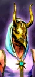 Cultist of TzeentchWizard |
— | 1 | 11,250 | 60 | 55 | 38 | 35 | 30 | 375 | — | 250 |
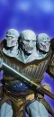 Exalted Hero of TzeentchMelee Specialist |
— | 1 | 4,068 | 100 | 70 | 33 | 45 | 50 | 420 | — | 250 |
 Iridescent Horror (Metal)Wizard |
— | 1 | 3,408 | 35 | 65 | 38 | 30 | 30 | 300 | 338 / 130m | 225 |
 Iridescent Horror (Tzeentch)Wizard |
— | 1 | 3,408 | 35 | 65 | 38 | 30 | 30 | 300 | 338 / 130m | 225 |
 The Blue ScribesWizard |
— | 1 | 3,520 | 20 | 70 | 95 | 35 | 25 | 380 | 375 / 130m | — |
近战步兵8 个单位
| 兵种 | T | 兵模 | 生命 | 护甲 | 领导 | 速度 | 近攻 | 近防 | 武器 | 远程 / 射程 | 维护 |
|---|---|---|---|---|---|---|---|---|---|---|---|
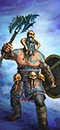 Marauders of TzeentchAxe Infantry |
T1 | 120 | 9,360 | 15 | 60 | 35 | 34 | 28 | 28 | — | 106 |
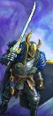 Chaos Warriors of TzeentchSword Infantry |
T2 | 100 | 9,000 | 100 | 75 | 28 | 36 | 44 | 36 | — | 200 |
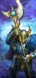 Chaos Warriors of Tzeentch (Halberds)Halberd Infantry |
T2 | 100 | 9,000 | 100 | 75 | 28 | 30 | 42 | 34 | — | 231 |
Forsaken of TzeentchMelee Infantry |
T2 | 80 | 8,000 | 85 | 70 | 46 | 32 | 20 | 58 | — | 206 |
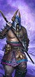 Marauders of Tzeentch (Spears)Spear Infantry |
T2 | 120 | 9,360 | 15 | 60 | 35 | 25 | 37 | 25 | — | 125 |
 TzaangorsAxe Infantry |
T2 | 120 | 9,600 | 50 | 62 | 38 | 26 | 38 | 30 | — | 175 |
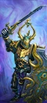 Chosen of TzeentchSword Infantry |
T3 | 80 | 10,480 | 120 | 85 | 28 | 46 | 60 | 48 | — | 338 |
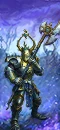 Chosen of Tzeentch (Halberds)Halberd Infantry |
T4 | 80 | 10,480 | 120 | 85 | 28 | 36 | 56 | 46 | — | 375 |
远程步兵4 个单位
| 兵种 | T | 兵模 | 生命 | 护甲 | 领导 | 速度 | 近攻 | 近防 | 武器 | 远程 / 射程 | 维护 |
|---|---|---|---|---|---|---|---|---|---|---|---|
Blue Horrors of TzeentchMelee Infantry |
T2 | 160 | 7,680 | 5 | 50 | 38 | 20 | 22 | 24 | 19 / 90m | 125 |
Pink Horrors of TzeentchMissile Infantry |
T2 | 80 | 6,400 | 25 | 70 | 38 | 22 | 26 | 28 | 25 / 130m | 175 |
 Exalted Pink Horrors of TzeentchMissile Infantry |
T3 | 80 | 7,200 | 35 | 75 | 38 | 30 | 38 | 32 | 31 / 130m | 250 |
 Soul Grinder of TzeentchMissile Monster |
T4 | 1 | 8,188 | 90 | 70 | 75 | 42 | 35 | 450 | 500 / 250m | 475 |
怪步 / 飞行步兵5 个单位
| 兵种 | T | 兵模 | 生命 | 护甲 | 领导 | 速度 | 近攻 | 近防 | 武器 | 远程 / 射程 | 维护 |
|---|---|---|---|---|---|---|---|---|---|---|---|
 Chaos Furies (Tzeentch)Flying Melee Infantry |
T2 | 60 | 5,280 | 25 | 50 | 110 | 36 | 18 | 44 | — | 138 |
Flamers of TzeentchMonstrous Missile Infantry |
T2 | 12 | 3,084 | 10 | 60 | 50 | 28 | 12 | 46 | 304 / 90m | 213 |
Screamers of TzeentchFlying Monstrous Infantry |
T2 | 16 | 4,880 | 30 | 60 | 85 | 26 | 22 | 60 | — | 175 |
Spawn of TzeentchMonstrous Infantry |
T3 | 16 | 8,768 | 10 | 100 | 42 | 36 | 28 | 170 | — | 250 |
 ChangebringersMonstrous Missile Infantry |
T4 | 12 | 3,216 | 10 | 60 | 95 | 28 | 12 | 46 | 304 / 90m | 375 |
近战骑兵3 个单位
| 兵种 | T | 兵模 | 生命 | 护甲 | 领导 | 速度 | 近攻 | 近防 | 武器 | 远程 / 射程 | 维护 |
|---|---|---|---|---|---|---|---|---|---|---|---|
 Centigors of TzeentchBestial Cavalry Great Weapons |
T2 | 60 | 6,720 | 35 | 60 | 84 | 22 | 22 | 34 | — | 300 |
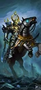 Chaos Knights of TzeentchCavalry |
T3 | 60 | 8,100 | 120 | 75 | 70 | 42 | 50 | 53 | — | 375 |
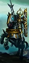 Chaos Knights of Tzeentch (Lances)Shock Cavalry |
T4 | 60 | 8,100 | 120 | 75 | 70 | 42 | 38 | 53 | — | 400 |
远程骑兵1 个单位
| 兵种 | T | 兵模 | 生命 | 护甲 | 领导 | 速度 | 近攻 | 近防 | 武器 | 远程 / 射程 | 维护 |
|---|---|---|---|---|---|---|---|---|---|---|---|
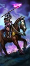 Marauder Horsemen of TzeentchMissile Cavalry |
T2 | 60 | 5,460 | 15 | 48 | 90 | 22 | 20 | 24 | 24 / 80m | 175 |
怪骑1 个单位
| 兵种 | T | 兵模 | 生命 | 护甲 | 领导 | 速度 | 近攻 | 近防 | 武器 | 远程 / 射程 | 维护 |
|---|---|---|---|---|---|---|---|---|---|---|---|
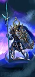 Doom Knights of TzeentchFlying Cavalry |
T4 | 24 | 5,880 | 120 | 80 | 95 | 44 | 36 | 80 | — | 400 |
战车2 个单位
| 兵种 | T | 兵模 | 生命 | 护甲 | 领导 | 速度 | 近攻 | 近防 | 武器 | 远程 / 射程 | 维护 |
|---|---|---|---|---|---|---|---|---|---|---|---|
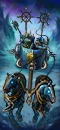 Chaos Chariots of TzeentchChariot |
T2 | 4 | 5,736 | 110 | 70 | 78 | 22 | 28 | 40 | — | 213 |
Burning Chariot of TzeentchFlying Missile Chariot |
T4 | 1 | 4,980 | 20 | 70 | 85 | 35 | 28 | 400 | 1,013 / 90m | 400 |
巨兽5 个单位
| 兵种 | T | 兵模 | 生命 | 护甲 | 领导 | 速度 | 近攻 | 近防 | 武器 | 远程 / 射程 | 维护 |
|---|---|---|---|---|---|---|---|---|---|---|---|
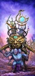 Chaos Warshrine of TzeentchSupport Monster |
T3 | 1 | 11,250 | 60 | 60 | 38 | 35 | 30 | 375 | — | 325 |
 CockatriceFlying Monster |
T3 | 1 | 6,120 | 35 | 60 | 90 | 46 | 38 | 420 | — | 275 |
 Exalted Flamer of TzeentchMissile Monster |
T3 | 1 | 3,180 | 10 | 70 | 50 | 34 | 20 | 365 | 1,013 / 150m | 325 |
Lord of ChangeFlying Monster |
T4 | 1 | 7,028 | 30 | 75 | 90 | 45 | 45 | 420 | — | 425 |
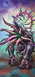 Mutalith Vortex BeastMonster |
T5 | 1 | 8,088 | 70 | 65 | 66 | 45 | 40 | 460 | — | 525 |
名将团10 个单位
| 兵种 | T | 兵模 | 生命 | 护甲 | 领导 | 速度 | 近攻 | 近防 | 武器 | 远程 / 射程 | 维护 |
|---|---|---|---|---|---|---|---|---|---|---|---|
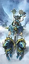 Followers of the Great Eagle (Marauder Chariots)Chariot · Renown |
T2 | 4 | 5,632 | 90 | 80 | 78 | 29 | 36 | 40 | — | 250 |
 Shrieking Skyrays (Screamers of Tzeentch)Flying Monstrous Infantry · Renown |
T2 | 16 | 4,880 | 30 | 70 | 85 | 34 | 29 | 60 | — | 238 |
 The Chromatic Abominations (Blue Horrors of Tzeentch)Melee Infantry · Renown |
T2 | 160 | 7,680 | 5 | 60 | 38 | 27 | 29 | 24 | 19 / 90m | 188 |
 The Sourguts (Pink Horrors of Tzeentch)Missile Infantry · Renown |
T2 | 80 | 7,200 | 25 | 80 | 38 | 29 | 34 | 28 | 25 / 130m | 237 |
 Blazing Squealers (Exalted Pink Horrors of Tzeentch)Missile Infantry · Renown |
T3 | 80 | 7,200 | 35 | 85 | 38 | 38 | 48 | 32 | 31 / 130m | 337 |
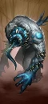 Wyrd Spawn (Chaos Spawn)Monstrous Infantry · Renown |
T3 | 16 | 8,768 | 10 | 100 | 42 | 45 | 36 | 170 | — | 325 |
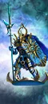 Knights of Immolation (Doom Knights of Tzeentch)Flying Cavalry · Renown |
T4 | 24 | 5,880 | 120 | 90 | 95 | 54 | 45 | 80 | — | 425 |
 The Golden Griffin of Theurgy (Lord of Change)Flying Monster · Renown |
T4 | 1 | 7,028 | 90 | 85 | 90 | 56 | 56 | 420 | — | 463 |
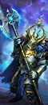 The Severed Claw (Aspiring Champions)Halberd Infantry · Renown |
T4 | 16 | 9,040 | 120 | 90 | 32 | 40 | 52 | 90 | — | 375 |
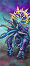 Aeson the Fallen (Mutalith Vortex Beast)Monster · Renown |
T5 | 1 | 8,088 | 70 | 75 | 66 | 56 | 50 | 460 | — | 650 |
已排除“扩展名册（extended roster）”单位。数值为 Patch 9.0.4；不同版本可能微调。
04 / ARMY BUILD配兵思路
先按角色填槽，再按对手换兵。下面是一个通用的 20 槽骨架，以及用本页推荐兵种拼出的示例。
| 角色 | 建议槽位 | 说明 |
|---|---|---|
| 扛线 | 5–6 | 持盾 / 重甲步兵，任务是站住，不是杀敌。 |
| 远程 | 3–5 | 弓箭、火枪或炮兵；至少 2 队能打重甲。 |
| 机动 | 3–4 | 骑兵、战车、飞行单位；包抄、背冲、追逃。 |
| 巨兽 / 炮兵 | 1–3 | 破阵、斩将、攻城；别孤军深入。 |
| 英雄 | 1–3 | 法师 + 支援英雄，嵌入主力。 |
示例：4× 火焰魔 + 2× 尖啸魔 + 4× 蓝色恐怖 + 3× 燃烧战车 + 2× 万变魔君 + 领主 + 1 英雄，余下 3–4 槽按对手补破甲 / 反大型 / 炮兵。
重甲多带破甲（火枪、大炮、巨斧）；巨兽多带反大型（长戟、弩炮）；鼠人 / 绿皮多带范围伤害（吹息、炮兵、火焰）；骑兵多留 2 队长戟或反大型。不要一套配兵打到底。